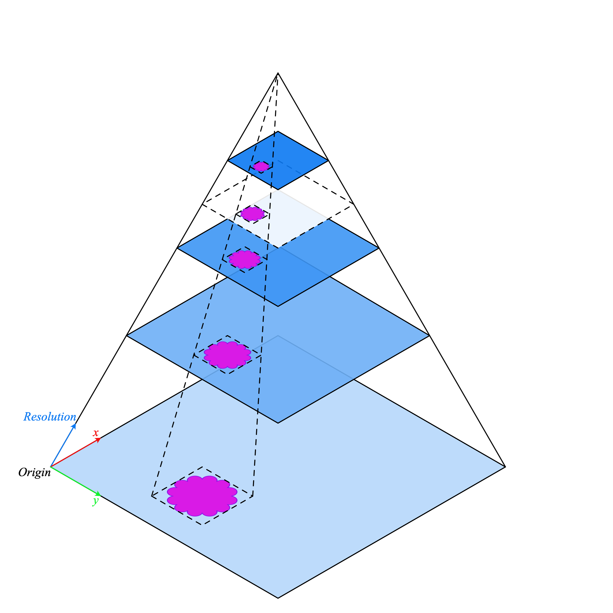
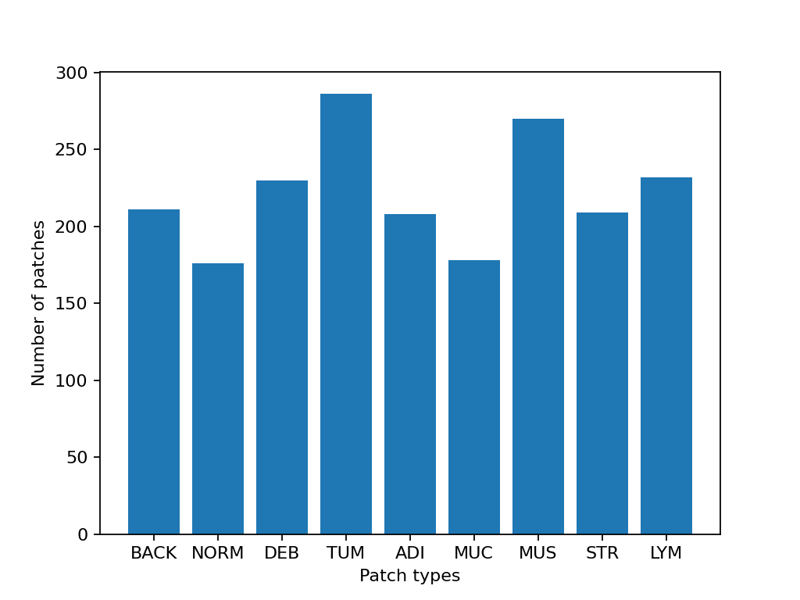
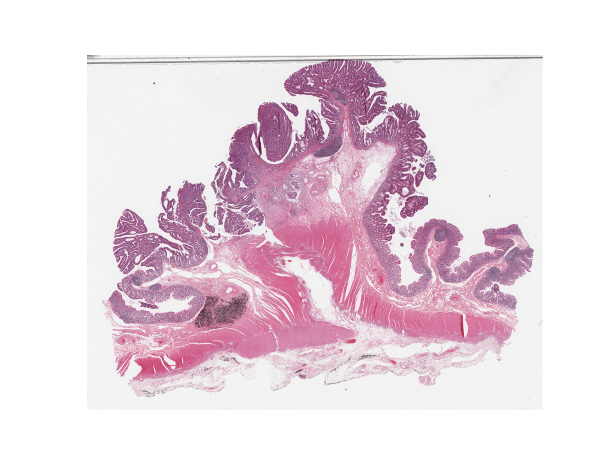
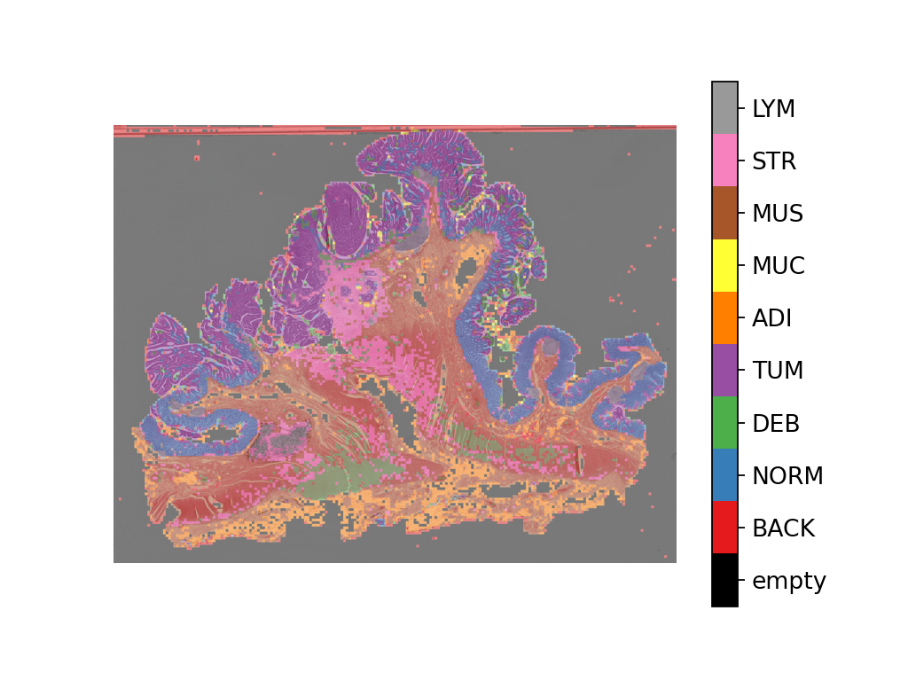
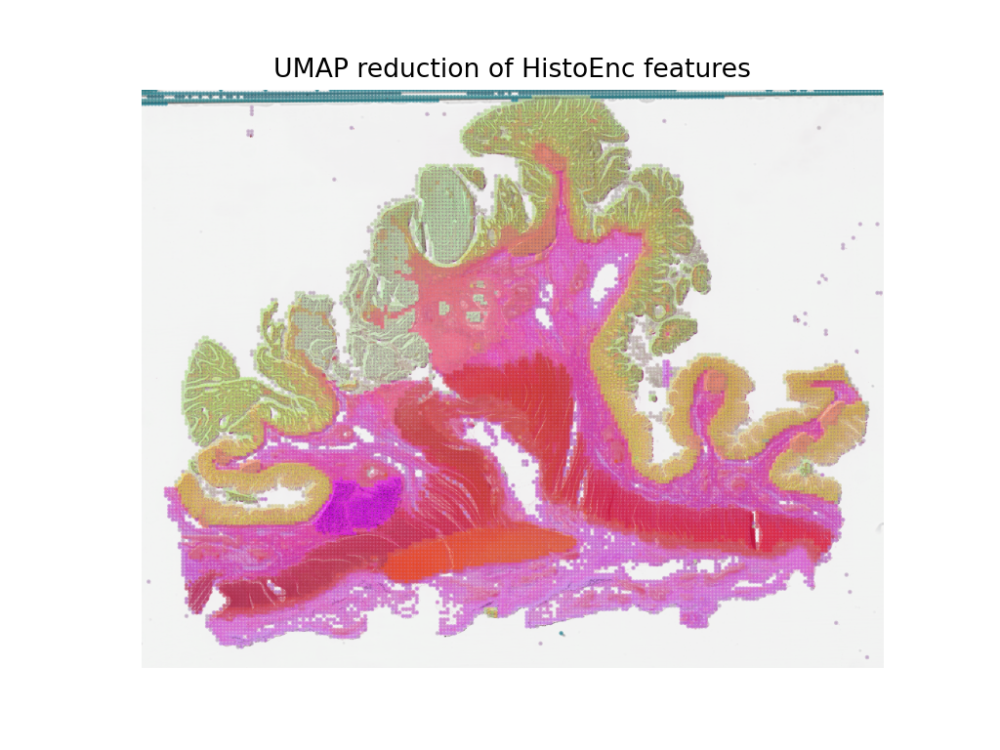

使用 PyTorch 和 TIAToolbox 进行全切片图像分类
创建于：2025 年 4 月 1 日 | 最后更新：2025 年 4 月 1 日 | 最后验证：2024 年 11 月 5 日
提示
为了充分利用本教程，我们建议使用此 Colab 版本。这将允许您实验以下信息。
简介
在本教程中，我们将展示如何使用 PyTorch 深度学习模型以及 TIAToolbox 来对全切片图像（WSI）进行分类。WSI 是通过对手术或活检中的人体组织样本进行扫描而获得的图像，它们被病理学家和计算病理学研究人员用于在显微镜下研究疾病，例如癌症，以了解肿瘤生长并帮助改善患者的治疗。
处理全切片图像（WSI）的挑战在于其巨大的尺寸。例如，一张典型的切片图像的像素数量约为 100,000x100,000，其中每个像素可以对应切片上的约 0.25x0.25 微米。这给加载和处理此类图像带来了挑战，更不用说单个研究中可能包含数百甚至数千个 WSI（更大规模的研究会产生更好的结果）！
传统的图像处理流程不适用于 WSI 处理，因此我们需要更好的工具。这就是 TIAToolbox 能发挥作用的地方，因为它提供了一套有用的工具，可以快速且高效地导入和处理组织切片。通常，WSI 以金字塔结构保存，包含同一图像在不同放大倍率下的多个副本，以优化可视化。金字塔结构的第 0 级（或底部级别）包含最高放大倍率或缩放级别的图像，而金字塔中的更高级别包含基图像的较低分辨率副本。下面的图示展示了金字塔结构。

WSI 金字塔堆栈（源）TIAToolbox 允许我们自动化常见的下游分析任务，例如组织分类。在本教程中，我们将展示如何：1. 使用 TIAToolbox 加载 WSI 图像；2. 使用不同的 PyTorch 模型在 patch 级别对幻灯片进行分类。在本教程中，我们将提供一个使用 TorchVision ResNet18 模型和自定义 HistoEncoder `__ 模型的示例。
让我们开始吧！
设置环境
要运行本教程中提供的示例，需要以下软件包作为先决条件。
OpenJpeg
OpenSlide
Pixman
TIAToolbox
HistoEncoder（自定义模型示例）
请在您的终端中运行以下命令来安装这些包：
apt-get -y -qq install libopenjp2-7-dev libopenjp2-tools openslide-tools libpixman-1-dev pip install -q ‘tiatoolbox<1.5’ histoencoder && echo “安装完成。”
或者，您可以在 MacOS 上运行 brew install openjpeg openslide 来安装依赖包，而不是 apt-get 。有关安装的更多信息，请在此处查看。
运行前的清理
为确保正确清理（例如在异常终止时），本次运行下载或创建的所有文件都保存在单个目录 global_save_dir 中，我们将其设置为“./tmp/”。为了简化维护，目录名称只出现在这个位置，以便如果需要可以轻松更改。
warnings.filterwarnings("ignore")
global_save_dir = Path("./tmp/")
def rmdir(dir_path: str | Path) -> None:
"""Helper function to delete directory."""
if Path(dir_path).is_dir():
shutil.rmtree(dir_path)
logger.info("Removing directory %s", dir_path)
rmdir(global_save_dir) # remove directory if it exists from previous runs
global_save_dir.mkdir()
logger.info("Creating new directory %s", global_save_dir)
下载数据
为了我们的样本数据，我们将使用一张完整的切片图像，以及来自 Kather 100k 数据集验证子集的图像块。
wsi_path = global_save_dir / "sample_wsi.svs"
patches_path = global_save_dir / "kather100k-validation-sample.zip"
weights_path = global_save_dir / "resnet18-kather100k.pth"
logger.info("Download has started. Please wait...")
# Downloading and unzip a sample whole-slide image
download_data(
"https://tiatoolbox.dcs.warwick.ac.uk/sample_wsis/TCGA-3L-AA1B-01Z-00-DX1.8923A151-A690-40B7-9E5A-FCBEDFC2394F.svs",
wsi_path,
)
# Download and unzip a sample of the validation set used to train the Kather 100K dataset
download_data(
"https://tiatoolbox.dcs.warwick.ac.uk/datasets/kather100k-validation-sample.zip",
patches_path,
)
with ZipFile(patches_path, "r") as zipfile:
zipfile.extractall(path=global_save_dir)
# Download pretrained model weights for WSI classification using ResNet18 architecture
download_data(
"https://tiatoolbox.dcs.warwick.ac.uk/models/pc/resnet18-kather100k.pth",
weights_path,
)
logger.info("Download is complete.")
读取数据
我们创建一个图像块列表和一个相应的标签列表。例如， label_list 中的第一个标签将指示 patch_list 中的第一个图像块所属的类别。
# Read the patch data and create a list of patches and a list of corresponding labels
dataset_path = global_save_dir / "kather100k-validation-sample"
# Set the path to the dataset
image_ext = ".tif" # file extension of each image
# Obtain the mapping between the label ID and the class name
label_dict = {
"BACK": 0, # Background (empty glass region)
"NORM": 1, # Normal colon mucosa
"DEB": 2, # Debris
"TUM": 3, # Colorectal adenocarcinoma epithelium
"ADI": 4, # Adipose
"MUC": 5, # Mucus
"MUS": 6, # Smooth muscle
"STR": 7, # Cancer-associated stroma
"LYM": 8, # Lymphocytes
}
class_names = list(label_dict.keys())
class_labels = list(label_dict.values())
# Generate a list of patches and generate the label from the filename
patch_list = []
label_list = []
for class_name, label in label_dict.items():
dataset_class_path = dataset_path / class_name
patch_list_single_class = grab_files_from_dir(
dataset_class_path,
file_types="*" + image_ext,
)
patch_list.extend(patch_list_single_class)
label_list.extend([label] * len(patch_list_single_class))
# Show some dataset statistics
plt.bar(class_names, [label_list.count(label) for label in class_labels])
plt.xlabel("Patch types")
plt.ylabel("Number of patches")
# Count the number of examples per class
for class_name, label in label_dict.items():
logger.info(
"Class ID: %d -- Class Name: %s -- Number of images: %d",
label,
class_name,
label_list.count(label),
)
# Overall dataset statistics
logger.info("Total number of patches: %d", (len(patch_list)))

|2023-11-14|13:15:59.299| [INFO] Class ID: 0 -- Class Name: BACK -- Number of images: 211
|2023-11-14|13:15:59.299| [INFO] Class ID: 1 -- Class Name: NORM -- Number of images: 176
|2023-11-14|13:15:59.299| [INFO] Class ID: 2 -- Class Name: DEB -- Number of images: 230
|2023-11-14|13:15:59.299| [INFO] Class ID: 3 -- Class Name: TUM -- Number of images: 286
|2023-11-14|13:15:59.299| [INFO] Class ID: 4 -- Class Name: ADI -- Number of images: 208
|2023-11-14|13:15:59.299| [INFO] Class ID: 5 -- Class Name: MUC -- Number of images: 178
|2023-11-14|13:15:59.299| [INFO] Class ID: 6 -- Class Name: MUS -- Number of images: 270
|2023-11-14|13:15:59.299| [INFO] Class ID: 7 -- Class Name: STR -- Number of images: 209
|2023-11-14|13:15:59.299| [INFO] Class ID: 8 -- Class Name: LYM -- Number of images: 232
|2023-11-14|13:15:59.299| [INFO] Total number of patches: 2000
如您所见，对于这个图像块数据集，我们有 9 个类别/标签，ID 为 0-8，并关联了类别名称，描述图像块中的主要组织类型：
后景（空玻璃区域）→ BACK
淋巴细胞→ LYM
正常结肠黏膜→ NORM
杂质→ DEB
MUS ⟶ 平滑肌
STR ⟶ 癌相关间质
ADI ⟶ 脂肪
MUC ⟶ 黏液
脱机翻译 ⟶ 结直肠癌腺癌细胞
分类图像块
我们首先演示如何使用 patch 模式对数字切片中的每个块进行预测，然后使用 wsi 模式对大切片进行预测。
定义 PatchPredictor 模型
PatchPredictor 类运行一个基于 PyTorch 的 CNN 分类器。
model可以是任何遵循tiatoolbox.models.abc.ModelABC（文档）`__ 类结构的已训练 PyTorch 模型。有关此问题的更多信息，请参阅我们关于高级模型技术的示例笔记本。为了加载自定义模型，您需要编写一个小型预处理函数，如preproc_func(img)，以确保输入张量以正确格式加载网络。或者，您可以将
pretrained_model作为字符串参数传递。这指定了执行预测的 CNN 模型，并且它必须是此处列出的模型之一。命令将如下所示：predictor = PatchPredictor(pretrained_model='resnet18-kather100k', pretrained_weights=weights_path, batch_size=32)。pretrained_weights：当使用pretrained_model时，默认情况下还将下载相应的预训练权重。您可以通过pretrained_weight参数使用自己的权重集覆盖默认设置。每次模型输入的图像数量。此参数的值越高，所需的（GPU）内存容量就越大。
# Importing a pretrained PyTorch model from TIAToolbox
predictor = PatchPredictor(pretrained_model='resnet18-kather100k', batch_size=32)
# Users can load any PyTorch model architecture instead using the following script
model = vanilla.CNNModel(backbone="resnet18", num_classes=9) # Importing model from torchvision.models.resnet18
model.load_state_dict(torch.load(weights_path, map_location="cpu", weights_only=True), strict=True)
def preproc_func(img):
img = PIL.Image.fromarray(img)
img = transforms.ToTensor()(img)
return img.permute(1, 2, 0)
model.preproc_func = preproc_func
predictor = PatchPredictor(model=model, batch_size=32)
预测块标签
我们创建一个预测对象，然后使用 patch 模式调用 predict 方法。然后我们计算分类准确率和混淆矩阵。
with suppress_console_output():
output = predictor.predict(imgs=patch_list, mode="patch", on_gpu=ON_GPU)
acc = accuracy_score(label_list, output["predictions"])
logger.info("Classification accuracy: %f", acc)
# Creating and visualizing the confusion matrix for patch classification results
conf = confusion_matrix(label_list, output["predictions"], normalize="true")
df_cm = pd.DataFrame(conf, index=class_names, columns=class_names)
df_cm
|2023-11-14|13:16:03.215| [INFO] Classification accuracy: 0.993000
预测整个切片的补丁标签 ¶
现在我们引入了 IOPatchPredictorConfig ，这是一个指定模型预测引擎图像读取和预测写入配置的类。这是为了通知分类器分类器应该读取 WSI 金字塔的哪个级别，处理数据并生成输出。
IOPatchPredictorConfig 的参数定义如下：
input_resolutions：一个列表，以字典的形式指定每个输入的分辨率。列表元素必须与目标model.forward()中的顺序相同。如果您的模型只接受一个输入，只需放置一个指定'units'和'resolution'的字典即可。请注意，TIAToolbox 支持具有多个输入的模型。有关单位和分辨率的更多信息，请参阅 TIAToolbox 文档。patch_input_shape：最大输入的形状，格式为（高度，宽度）。步长（步数），用于两个连续补丁之间的距离，在补丁提取过程中使用。如果用户将
stride_shape设置为patch_input_shape，则补丁将被提取并处理，没有任何重叠。
wsi_ioconfig = IOPatchPredictorConfig(
input_resolutions=[{"units": "mpp", "resolution": 0.5}],
patch_input_shape=[224, 224],
stride_shape=[224, 224],
)
predict 方法将 CNN 应用于输入补丁并获取结果。以下是参数及其描述：
mode：要处理的输入类型。根据您的应用选择patch、tile或wsi。imgs：输入列表，应为一组输入路径列表，指向输入瓦片或全切片。return_probabilities: 将此设置为 True，以获取输入块预测标签的每个类别的概率。如果您希望合并预测以生成tile或wsi模式的预测图，则可以设置return_probabilities=True。ioconfig: 使用IOPatchPredictorConfig类设置 IO 配置信息。resolution和unit（以下未显示）：这些参数指定从其中计划提取块的 WSI 级别或每像素微米分辨率，可以用作ioconfig的替代。在此，我们指定 WSI 级别为'baseline'，相当于级别 0。通常，这是最高分辨率的级别。在这种情况下，图像只有一个级别。更多详细信息请参阅文档。masks: 与imgs列表中 WSI 对应的掩码路径列表。这些掩码指定了从原始 WSI 中想要提取块的区域。如果指定特定 WSI 的掩码为None，则该 WSI 的所有块（包括背景区域）的标签都将被预测。这可能导致不必要的计算。您可以将此参数设置为
True，如果需要生成补丁分类结果的 2D 地图。但是，对于大型 WSI，这将需要大量的可用内存。一个替代的（默认）解决方案是设置merge_predictions=False，然后使用merge_predictions函数生成 2D 预测地图，您将在后面看到。
由于我们使用的是大型 WSI，补丁提取和预测过程可能需要一些时间（如果您有访问启用 Cuda 的 GPU 和 PyTorch+Cuda，请确保设置 ON_GPU=True ）。
with suppress_console_output():
wsi_output = predictor.predict(
imgs=[wsi_path],
masks=None,
mode="wsi",
merge_predictions=False,
ioconfig=wsi_ioconfig,
return_probabilities=True,
save_dir=global_save_dir / "wsi_predictions",
on_gpu=ON_GPU,
)
我们通过可视化 wsi_output 来了解预测模型在我们全切片图像上的工作方式。我们首先需要合并补丁预测输出，然后将它们作为叠加在原始图像上的图层进行可视化。与之前一样，使用 merge_predictions 方法合并补丁预测。在这里，我们将参数 resolution=1.25, units='power' 设置为生成 1.25 倍放大率的预测地图。如果您想获得更高/更低分辨率（更大/更小）的预测地图，需要相应地更改这些参数。当预测合并后，使用 overlay_patch_prediction 函数将预测地图叠加在 WSI 缩略图上，该缩略图应提取用于预测合并的分辨率。
overview_resolution = (
4 # the resolution in which we desire to merge and visualize the patch predictions
)
# the unit of the `resolution` parameter. Can be "power", "level", "mpp", or "baseline"
overview_unit = "mpp"
wsi = WSIReader.open(wsi_path)
wsi_overview = wsi.slide_thumbnail(resolution=overview_resolution, units=overview_unit)
plt.figure(), plt.imshow(wsi_overview)
plt.axis("off")

如下将预测地图叠加到这张图片上：
# Visualization of whole-slide image patch-level prediction
# first set up a label to color mapping
label_color_dict = {}
label_color_dict[0] = ("empty", (0, 0, 0))
colors = cm.get_cmap("Set1").colors
for class_name, label in label_dict.items():
label_color_dict[label + 1] = (class_name, 255 * np.array(colors[label]))
pred_map = predictor.merge_predictions(
wsi_path,
wsi_output[0],
resolution=overview_resolution,
units=overview_unit,
)
overlay = overlay_prediction_mask(
wsi_overview,
pred_map,
alpha=0.5,
label_info=label_color_dict,
return_ax=True,
)
plt.show()

使用病理特定模型进行特征提取 ¶
在本节中，我们将展示如何使用 TIAToolbox 提供的 WSI 推理引擎从存在于 TIAToolbox 之外的预训练 PyTorch 模型中提取特征。为了说明这一点，我们将使用 HistoEncoder，这是一个针对计算病理的专用模型，它以自监督的方式训练以从组织病理学图像中提取特征。该模型已在此处提供：
“HistoEncoder：数字病理的基座模型”（https://github.com/jopo666/HistoEncoder）由 Pohjonen, Joona 及其在赫尔辛基大学的研究团队编写。
我们将绘制特征图到 3D（RGB）的 UMAP 降维，以可视化特征如何捕捉上述提到的某些组织类型的差异。
# Import some extra modules
import histoencoder.functional as F
import torch.nn as nn
from tiatoolbox.models.engine.semantic_segmentor import DeepFeatureExtractor, IOSegmentorConfig
from tiatoolbox.models.models_abc import ModelABC
import umap
TIAToolbox 定义了一个 ModelABC 类，该类继承自 PyTorch nn.Module，并指定了模型在 TIAToolbox 推理引擎中使用时的外观。histoencoder 模型不遵循此结构，因此我们需要将其包装在一个类中，该类的输出和方法是 TIAToolbox 引擎所期望的。
class HistoEncWrapper(ModelABC):
"""Wrapper for HistoEnc model that conforms to tiatoolbox ModelABC interface."""
def __init__(self: HistoEncWrapper, encoder) -> None:
super().__init__()
self.feat_extract = encoder
def forward(self: HistoEncWrapper, imgs: torch.Tensor) -> torch.Tensor:
"""Pass input data through the model.
Args:
imgs (torch.Tensor):
Model input.
"""
out = F.extract_features(self.feat_extract, imgs, num_blocks=2, avg_pool=True)
return out
@staticmethod
def infer_batch(
model: nn.Module,
batch_data: torch.Tensor,
*,
on_gpu: bool,
) -> list[np.ndarray]:
"""Run inference on an input batch.
Contains logic for forward operation as well as i/o aggregation.
Args:
model (nn.Module):
PyTorch defined model.
batch_data (torch.Tensor):
A batch of data generated by
`torch.utils.data.DataLoader`.
on_gpu (bool):
Whether to run inference on a GPU.
"""
img_patches_device = batch_data.to('cuda') if on_gpu else batch_data
model.eval()
# Do not compute the gradient (not training)
with torch.inference_mode():
output = model(img_patches_device)
return [output.cpu().numpy()]
现在我们有了我们的包装器，我们将创建我们的特征提取模型并实例化一个 DeepFeatureExtractor，以便我们可以在 WSI 上使用此模型。我们将使用上面相同的 WSI，但这次我们将使用 HistoEncoder 模型从 WSI 的块中提取特征，而不是为每个块预测一些标签。
# create the model
encoder = F.create_encoder("prostate_medium")
model = HistoEncWrapper(encoder)
# set the pre-processing function
norm=transforms.Normalize(mean=[0.662, 0.446, 0.605],std=[0.169, 0.190, 0.155])
trans = [
transforms.ToTensor(),
norm,
]
model.preproc_func = transforms.Compose(trans)
wsi_ioconfig = IOSegmentorConfig(
input_resolutions=[{"units": "mpp", "resolution": 0.5}],
patch_input_shape=[224, 224],
output_resolutions=[{"units": "mpp", "resolution": 0.5}],
patch_output_shape=[224, 224],
stride_shape=[224, 224],
)
当我们创建 DeepFeatureExtractor 时，我们将传递 auto_generate_mask=True 参数。这将自动创建一个使用 otsu 阈值法的组织区域掩码，以便提取器只处理包含组织的那些块。
# create the feature extractor and run it on the WSI
extractor = DeepFeatureExtractor(model=model, auto_generate_mask=True, batch_size=32, num_loader_workers=4, num_postproc_workers=4)
with suppress_console_output():
out = extractor.predict(imgs=[wsi_path], mode="wsi", ioconfig=wsi_ioconfig, save_dir=global_save_dir / "wsi_features",)
这些特征可以用于训练下游模型，但在这里，为了了解这些特征代表什么，我们将使用 UMAP 降维来可视化特征在 RGB 空间中的分布。颜色相似的点应该具有相似的特征，因此我们可以检查当我们将 UMAP 降维叠加在 WSI 缩略图上时，特征是否自然地分离到不同的组织区域。我们将在下面的单元格中将其与上面的块级预测图一起绘制，以比较特征与块级预测的关系。
# First we define a function to calculate the umap reduction
def umap_reducer(x, dims=3, nns=10):
"""UMAP reduction of the input data."""
reducer = umap.UMAP(n_neighbors=nns, n_components=dims, metric="manhattan", spread=0.5, random_state=2)
reduced = reducer.fit_transform(x)
reduced -= reduced.min(axis=0)
reduced /= reduced.max(axis=0)
return reduced
# load the features output by our feature extractor
pos = np.load(global_save_dir / "wsi_features" / "0.position.npy")
feats = np.load(global_save_dir / "wsi_features" / "0.features.0.npy")
pos = pos / 8 # as we extracted at 0.5mpp, and we are overlaying on a thumbnail at 4mpp
# reduce the features into 3 dimensional (rgb) space
reduced = umap_reducer(feats)
# plot the prediction map the classifier again
overlay = overlay_prediction_mask(
wsi_overview,
pred_map,
alpha=0.5,
label_info=label_color_dict,
return_ax=True,
)
# plot the feature map reduction
plt.figure()
plt.imshow(wsi_overview)
plt.scatter(pos[:,0], pos[:,1], c=reduced, s=1, alpha=0.5)
plt.axis("off")
plt.title("UMAP reduction of HistoEnc features")
plt.show()


我们看到，我们的块级预测器生成的预测图和我们的自监督特征编码器的特征图捕捉了 WSI 中组织类型相似的关于信息。这是一个很好的合理性检查，表明我们的模型按预期工作。这也表明，HistoEncoder 模型提取的特征正在捕捉组织类型之间的差异，因此它们正在编码与组织学相关的信息。
接下来该去哪里 ¶
在这个笔记本中，我们展示了如何使用 PatchPredictor 和 DeepFeatureExtractor 类及其 predict 方法来预测大瓦片和全切片图像（WSI）的标签或提取特征。我们引入了 merge_predictions 和 overlay_prediction_mask 辅助函数，用于合并补丁预测输出，并将结果预测图作为叠加在输入图像/WSI 上的覆盖层进行可视化。
所有过程都在 TIAToolbox 中进行，我们可以轻松地将代码示例中的各个部分组合起来。请确保正确设置输入和选项。我们鼓励您进一步研究更改 predict 函数参数对预测输出的影响。我们已经展示了如何在 TIAToolbox 框架中使用您自己的预训练模型或研究社区提供的特定任务的模型进行推理，即使模型结构未定义在 TIAToolbox 模型类中。
您可以通过以下资源了解更多信息：